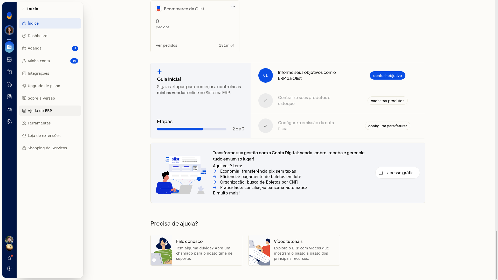
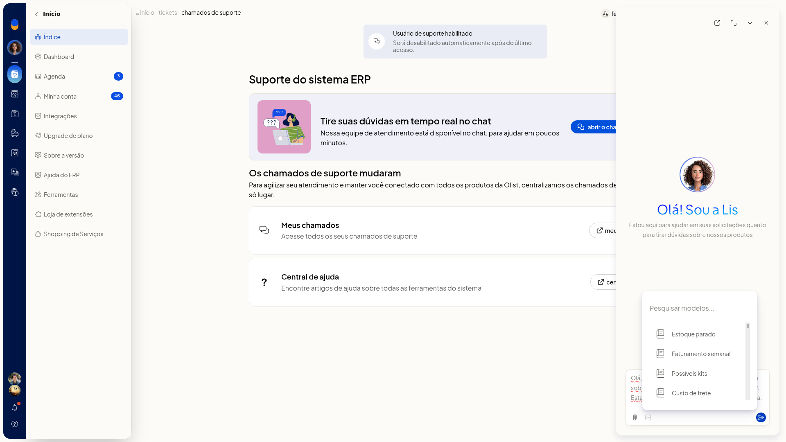
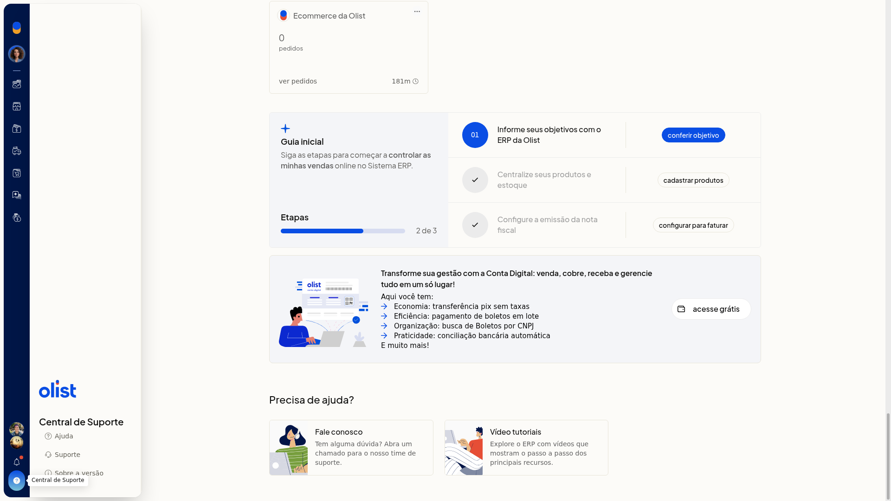
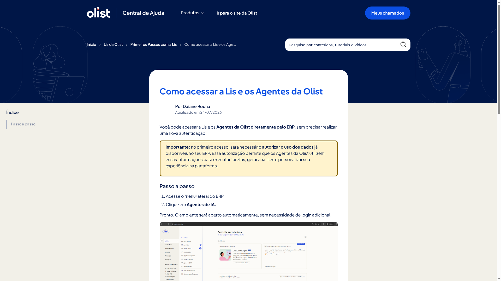

Assistente da Olist no ERP
No ERP da Olist, o Assistente da Olist (Lis) atende pelo chat em tempo real. Com a Lis, você esclarece dúvidas, automatiza tarefas e recebe ajuda nos chamados, usando modelos de pergunta e anexo de arquivo.
O chat fica na tela Suporte do sistema ERP. Você chega lá pelo card Fale conosco em Início > Índice ou por Ajuda > Suporte.
Importante
- O horário de atendimento informado na tela é de segunda a sexta, das 8h30 às 17h30.
- Para abrir um chamado, preencha a mensagem com pelo menos 10 palavras.
- Não há formulário de novo chamado com assunto ou categoria: o atendimento começa no chat.
Instruções
-
Acesse Início > Índice.
-
Abra o card Fale conosco.

-
Na tela Suporte do sistema ERP, clique em abrir o chat de suporte.

-
Digite a pergunta no campo Pergunte-me qualquer coisa. Estou aqui para automatizar suas tarefas, esclarecer dúvidas e ajudar nos seus chamados. O campo é de texto livre e não é obrigatório na tela.
-
Se quiser partir de um modelo, clique em Modelos e escolha um. Os modelos são:
- Estoque parado
- Faturamento semanal
- Possíveis kits
- Custo de frete
- Clientes valiosos
- Clientes para reativar
- Performance de vendas
- Análise regional
- Relatório Kardex
- Perfil de clientes do mês
- Comparativo mensal de vendas
- Produtos campeões por estado
- Top clientes do período

-
Se precisar, anexe uma imagem em JPEG, PNG, GIF ou WEBP, um PDF ou um CSV.
-
Envie a mensagem. O painel da Lis fica pronto para o atendimento da dúvida, da tarefa ou do chamado.
Resultado
O painel da Lis exibe o campo de pergunta, Modelos e o anexo de arquivo.
Informações adicionais
Você também abre o chat pelo cabeçalho
Clique em Ajuda e, no painel Central de Suporte, clique em Suporte. Em seguida, clique em abrir o chat de suporte.

O acesso pela Central de Ajuda indica o menu Agentes de IA
Em Início > Ajuda do ERP, abra o artigo Como acessar a Lis e os Agentes da Olist. O artigo descreve o acesso pelo menu lateral Agentes de IA.
